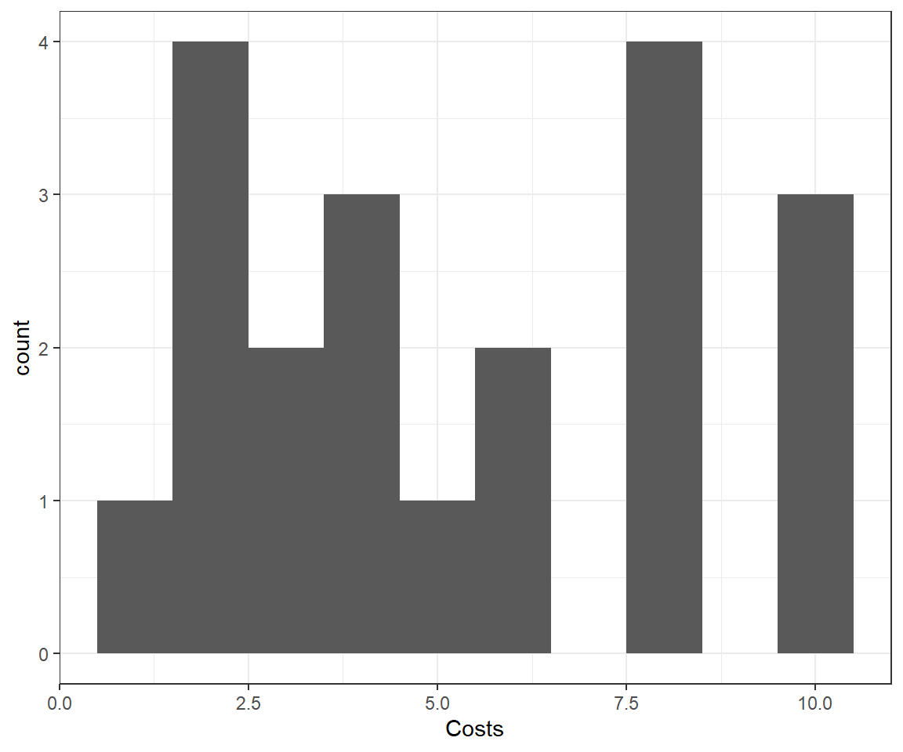
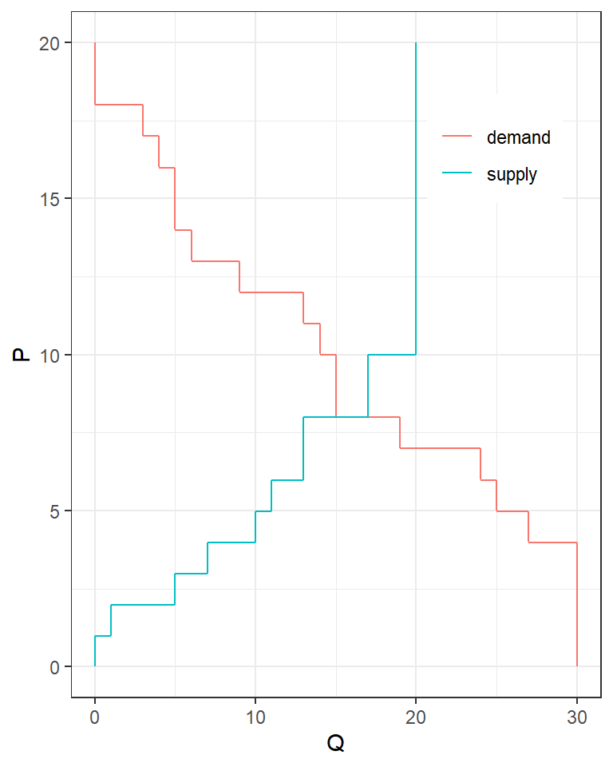
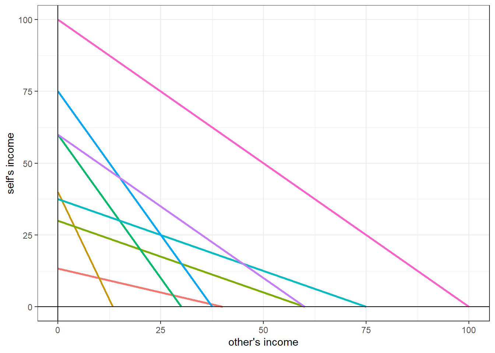
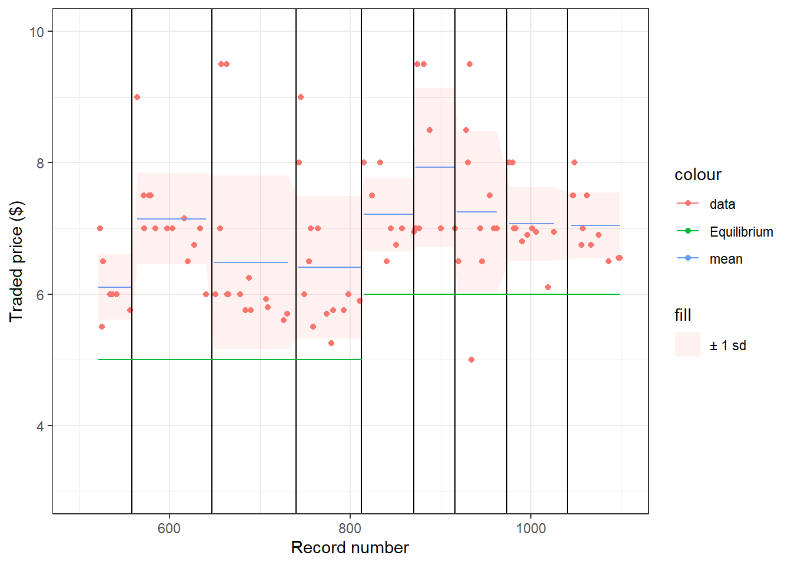
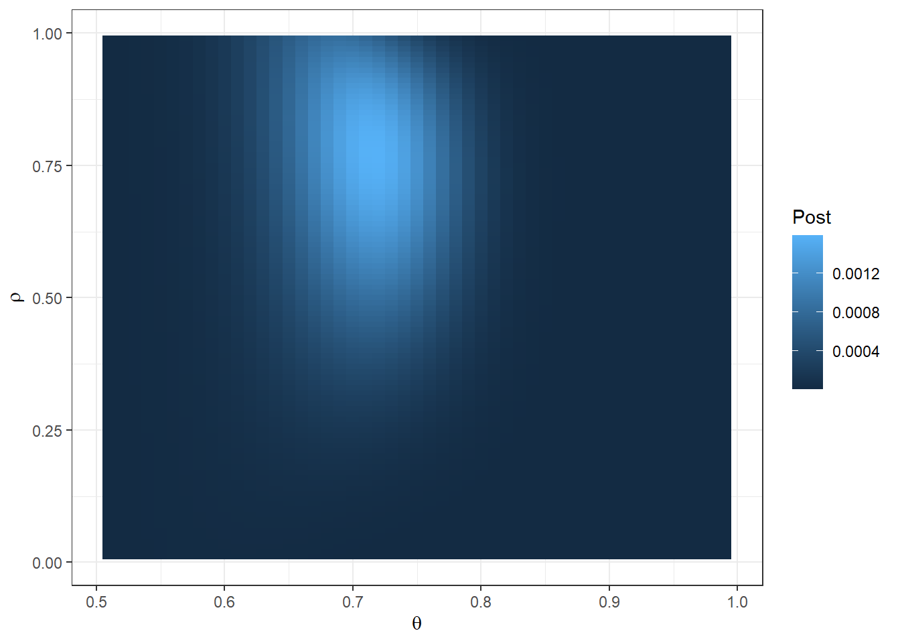
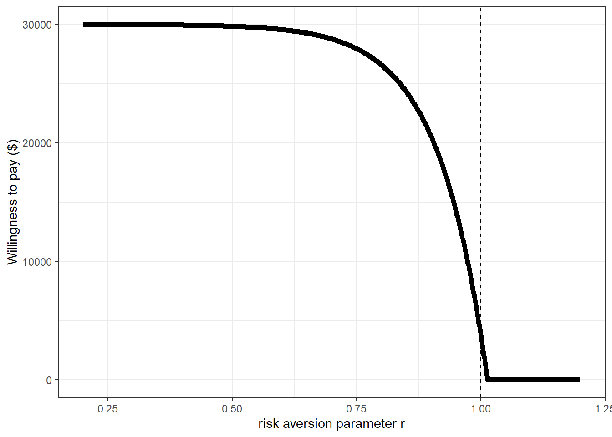

3 (PART) Problem sets
3.1 Guessing Game
Information about this game can be found in Chapter 6 of Holt’s Markets, Games, and Strategic Behavior.
3.1.1 A description of what happened
In Part 1, you were asked to choose a number between 0 and 100 (inclusive). A monetary prize was awarded to the person who chose closest to \(1/2\) of the average (mean) of your group’s choices. We repeated this task several times.
In Part 2, you were asked to choose a number between 0 and 100 (inclusive). A monetary prize was awarded to the person who chose closest to 20 plus \(1/2\) of the average (mean) of your group’s choices. We repeated this task several times.
3.1.2 Your homework assignment
Download the data from the experiment and answer the following questions:
Suppose that you knew for sure that everybody else will choose \(x\) (a number between 0 and 100). What should you choose? Show your answer in a plot with \(x\) on the horizontal axis, and your choice on the vertical axis. You have just calculated a best response! We will get back to this when we study game theory. Do this for both parts of the experiment.
There is a number such that if everybody else chooses this \(x\), you want to choose \(x\) also. Find this number and explain your working. You can solve this either analytically (i.e. pen paper) or computationally (e.g. with Excel, R, Stata, etc). The explanation is the important part.
Based on your answer to part (2), what would Nash equilibrium predict if we increased the group size?
Create a plot showing the average choice on the vertical axis, and the round number on the horizontal axis. Show the Nash equilibrium predictions on this plot.
Compare your theoretical predictions (i.e. questions 1 & 2) to the plot in question (4). What do you think is going on?
(6260 students only): Test whether or not the means between the two parts are different. State your assumptions. Comment on how appropriate they are.
3.1.3 Solutions
3.1.3.1 1 - Best response
If I choose \(y\) and everyone else chooses \(x\), then the average is: \[ \frac{\text{my choice}+(n-1)(\text{others' choices})}{n}=\frac{y+(n-1)x}{n} \] In Part 1, we want to choose a \(y\) that is equal to \(1/2\) of this number, so this sets up the equation: \[ \begin{aligned} y^*=\frac12\frac{y^*+(n-1)x}{n} \end{aligned} \] Note that \(y*\) is on the left- and right-hand side, so we need to solve for \(y^*\): \[ \begin{aligned} 2ny^*&=y^*+(n-1)x\\ y^*(2n-1)&=(n-1)x\\ y^*&=\frac{(n-1)x}{2n-1} \end{aligned} \] Note that for any group, \(n\geq2\), so we are not dividing by zero.
For Part 2, we need to choose as close as possible to 20 plus half the average. In math, we want to solve: \[ \begin{aligned} y^*&=20+\frac12\frac{y^*+(n-1)x}{n}\\ 2ny^*&=40n+y^*+(n-1)x\\ y^*(2n-1)&=40n+(n-1)x\\ y^*&=\frac{40n+(n-1)x}{2n-1} \end{aligned} \]
So getting these into plots
library(dplyr)
library(tidyr)
library(ggplot2)
x<-seq(0,100)
n<-4
y<-(n-1)*x/(2*n-1)
PlotThis<-data.frame(x,y)
PlotThis$Part<-"1"
tmp<-PlotThis
tmp$y<-(40*n+(n-1)*x)/(2*n-1)
tmp$Part<-"2"
PlotThis<-rbind(PlotThis,tmp)
plt1<-(ggplot(PlotThis,aes(x=x,y=y,linetype=Part))
+geom_line()
+theme_bw()
+xlab("Others' choice")
+ylab("Best response")
)
plt1
3.1.3.2 2 - Nash equilibrium
In both parts, we are looking for a solution for \(y^*=x\). That is, if everyone else is choosing \(x\), I also want to choose \(x\).
For Part 1, this sets up the equation: \[ x=\frac{(n-1)x}{2n-1} \] so \(x=0\) is the Nash equilibrium of this game.
For Part 2, we have: \[ \begin{aligned} x&=\frac{40n+(n-1)x}{2n-1}\\ x(2n-1)&=40n+(n-1)x\\ x\left((2n-1)-(n-1)\right)&=40n\\ nx&=40n\\ x=40 \end{aligned} \] Graphically, we are looking for an intersection of our best response curves with the \(45^\circ\) line, (i.e. \(x=y\)):

3.1.3.3 3 - Group size
\(n\) does not appear in the Nash equilibrium prediction, so Nash predicts that nothing will change if we increase the group size.
3.1.3.4 4 - Data
This plot is overkill, I’m not expecrting you to have something with box plots and loess smoothing. You can see the data’s means in the middle lines of the box plots.
library(readxl)
library(dplyr)
T1<-data.frame(read_excel("PS01-GuessingGame.xlsx",sheet="Treatment1")) %>% select(c("Round","Guess"))
T2<-data.frame(read_excel("PS01-GuessingGame.xlsx",sheet="Treatment 2")) %>% select(c("Round","Guess")) %>% mutate(Round=Round+10)
T1$Part <-1
T2$Part<-2
D<-rbind(T1,T2) %>% mutate(
Round=as.factor(Round),
Guess=as.numeric(Guess)
)
Round<-seq(1,10)
Part<-paste(1+(Round>=6))
MeanChoice<-c(50,30,20,10,1,10,20,50,48,40)
Nash<-(Round>=6)*40
plt3<-(
ggplot(D,aes(x=Round,y=Guess))
+geom_smooth(formula = y ~ x, method="loess",aes(group=Part,color="Data"))
+geom_boxplot(alpha=0.7,aes(color="Data"))
+theme_bw()
+geom_vline(xintercept=10.5,color="black",linetype="dashed")
+geom_segment(aes(x=1,y=0,xend=10,yend=0,color="Nash"),size=2)
+geom_segment(aes(x=11,y=40,xend=15,yend=40,color="Nash"),size=2)
+theme(legend.title=element_blank())
)
plt3
3.1.3.5 5 - Comparison
In both parts, choices seem to be trending in the direction of the Nash equilibrium. Especially in the first part, there is a large gap in the early rounds between the prediction and choices.
3.1.3.6 6 - Statistical test (6260 students only)
Here I will use linear regression.
| Dependent variable: | |||
| Guess | |||
| (1) | (2) | (3) | |
| Part == 2 | 17.043*** | 17.043*** | 26.156*** |
| (3.017) | (2.331) | (3.595) | |
| Trend1 | 22.956*** | ||
| (7.273) | |||
| Trend2 | -4.652 | ||
| (5.771) | |||
| Constant | 17.392*** | 17.392*** | 10.404*** |
| (1.738) | (2.054) | (2.924) | |
| Observations | 196 | 196 | 196 |
| R2 | 0.141 | 0.141 | 0.198 |
| Adjusted R2 | 0.137 | 0.137 | 0.186 |
| Residual Std. Error | 19.888 (df = 194) | 19.888 (df = 194) | 19.318 (df = 192) |
| F Statistic | 31.904*** (df = 1; 194) | 31.904*** (df = 1; 194) | 15.807*** (df = 3; 192) |
| Note: | p<0.1; p<0.05; p<0.01 | ||
The specification I use in column 1 is equivalent to the 2-sample \(t\)-test with different variances. Column 2 is the same as column 1 except using heteroskedasticity-robust standard errors. Column 3 adds in some “early round” effects. I.e. \(\text{Trend1}=1/\text{Round}\), which approaches zero as many rounds are played. In all regressions, the coefficient of interest is “Part==2”, which is the estimate of the difference in means between the second and first part (after time trends become negligible in column (3)). Note that adding this to the constant gets the regression’s prediction for Part 2, which is about 35 (not too far away from Nash). In all cases we reject the null hypothesis (both one and two-sided, at all sane levels of significance) that the two parts have equal means.
The assumptions required for Column (2) are:
- The error term is uncorrelated with Part. This is plausible because Part was a variable chosen by the experimenter (i.e. it is exogenous)
- The error term is independent. This is almost certainly wrong:
- It is likely that a participant’s errors are correlated, which could be fixed with clustering at the participant level (we can’t do this because we can’t link IDs across each part)
- It is likely that errors are correlated within groups playing together. We can’t account for this because we only had one group in the 2nd part.
- The variance of the error term in the regression is finite.
3.2 Markets
3.2.1 Your homework assignment
What could have happened in the market between Parts 1 and 2? Tell me one thing the government could have done to make this change, and one thing that could have happened not involving the market.
Draw the supply and demand curves for both parts of the experiment. Label equilibrium price and quantity
On a separate plot, show every trade price for every round. Include your predicted prices from Part 1. (this is a deliberately vague question, I am asking you to think about how to communicate the results of this experiment graphically)
Compute the predicted producer, consumer, and total surplus in both parts. Compare these to the actual consumer, producer, and total surplus from the experiment (dividing this up by round).
Write a short paragraph telling me your main findings. When needed, make reference to the three plots you made.
(6260 students only) The model also makes predictions about how many items each seller will sell, and how many items each buyer will buy. Comment on how well the theory is predicting these individual-level quantities (Again, this is another deliberately vague question. I am looking to see how you approach this problem)
3.2.2 Solutions
3.2.2.1 Loading the data
library(tidyr)
library(dplyr)
library(ggplot2)
DRaw<-data.frame(read.csv("PS02data.csv"))
D<-(DRaw
%>% mutate_all(.funs =as.numeric)
%>% mutate(Part = 1+(Round>=6))
)
D$Status<-as.factor(DRaw$Status)
D$Role<-"Buyer"
D$Role[is.na(D$Value)]<-"Seller"
knitr::kable(head(D))| X | Record | Round | ID | Unit | Value | Bid | Cost | Ask | Status | Market_Price | Earnings | Cumulative_earnings | Part | Role |
|---|---|---|---|---|---|---|---|---|---|---|---|---|---|---|
| 1 | 2 | 1 | 3 | 1 | 6 | 0 | NA | NA | i | NA | NA | NA | 1 | Buyer |
| 2 | 3 | 1 | 3 | 2 | 6 | 0 | NA | NA | i | NA | NA | NA | 1 | Buyer |
| 3 | 4 | 1 | 3 | 3 | 5 | 0 | NA | NA | i | NA | NA | NA | 1 | Buyer |
| 4 | 32 | 1 | 4 | 1 | 10 | 0 | NA | NA | i | NA | NA | NA | 1 | Buyer |
| 5 | 33 | 1 | 4 | 2 | 7 | 0 | NA | NA | i | NA | NA | NA | 1 | Buyer |
| 6 | 34 | 1 | 4 | 3 | 7 | 0 | NA | NA | i | NA | NA | NA | 1 | Buyer |
What could have happened in the market between Parts 1 and 2? Tell me one thing the government could have done to make this change, and one thing that could have happened not involving the market.
Draw the supply and demand curves for both parts of the experiment. Label equilibrium price and quantity
Solution: Here I will do questions 1 & 2 together, as it helps to have the supply and demand diagram to work out what happened.
# extract values and costs from rounds 1 and 6
SupplyDemand<-data.frame()
EQ<-data.frame()
P<-seq(0,max(Parameters$v, na.rm=T)+1,0.01)
for (rr in 1:2) {
# supply and demand functions
Qd<-function(p,r) {
v<-Parameters %>% filter(Part==r) %>% select(v)
sum(v>=p,na.rm=T)
}
Qs<-function(p,r) {
c<-Parameters %>% filter(Part==r) %>% select(c)
sum(c<=p,na.rm=T)
}
Q<-apply(as.matrix(P),1,FUN = {function(p) Qs(p,rr)})
tmp<-data.frame(P,Q)
tmp$type="Supply"
tmp$Part = paste("Part",rr)
SupplyDemand<-rbind(SupplyDemand,tmp)
ExcessDemand<-Q
Q<-apply(as.matrix(P),1,FUN = {function(p) Qd(p,rr)})
tmp<-data.frame(P,Q)
tmp$type="Demand"
tmp$Part = paste("Part",rr)
SupplyDemand<-rbind(SupplyDemand,tmp)
ExcessDemand<- -(ExcessDemand-Q)
ii<-sum(1*!(ExcessDemand<=0))
Peq<-round(P[ii]) # I know there is an integer solution
Qeq<-Q[ii]
tmp<-data.frame(Peq,Qeq)
tmp$Part<-paste("Part",rr)
EQ<-rbind(EQ,tmp)
}## Peq Qeq Part
## 1 5 20 Part 1
## 2 6 16 Part 2EQ$type<-"Equilibrium"
plt<-(
ggplot(SupplyDemand,aes(x=Q,y=P,color=type,group=paste(type,Part),linetype=Part))
+geom_path(size=1,alpha=0.8)
+theme_bw()
+xlab("Quantity")+ylab("Price ($)")
+geom_vline(data=EQ,aes(xintercept=Qeq),color="black",linetype="dotted")
+geom_hline(data=EQ,aes(yintercept=Peq),color="black",linetype="dotted")
+geom_point(data=EQ,aes(x=Qeq,y=Peq),size=4)
#+theme(legend.position="none")
)
print(plt)
From the above Figure, we can see that supply has shifted to the left (or up, by $2). Two possible causes of this could be:
- The government imposes a $2 tax on sellers
- An input cost increases
- On a separate plot, show every trade price for every round. Include your predicted prices from Part 1. (this is a deliberately vague question, I am asking you to think about how to communicate the results of this experiment graphically)
Solution
library(latex2exp)
NewRound<-c()
for (rr in 1:10) {
NewRound[rr]<- max((D %>% filter(Round==rr ))$Record)-1
}
Summary<-(D %>% filter(Record>=450 & Status=="t") %>% group_by(Round)
%>% summarize(
m=mean(Bid,na.rm=T),
s=sd(Bid,na.rm=T))
)
D <- D %>% left_join(Summary,by=c("Round"))
(
ggplot(D %>% filter(Status=="t"),aes(x=Record))
+geom_point(aes(y=Bid,color="data"))
#+geom_line(aes(y=Bid,color="data"))
+theme_bw()
+geom_line(aes(x=Record,y=m,group=Round,color="mean"))
+geom_ribbon(aes(x=Record,ymax=(m+s),ymin=(m-s),fill="\U00B1 1 sd"),alpha=0.1)
+geom_vline(xintercept=NewRound)
+ylim(c(0,11))
+geom_line(aes(x=Record,y=EQ$Peq[Part],group=Part,color="Equilibrium"))
+ylab("Traded price ($)")
+xlab("Record number")
+ylim(c(3,10))+xlim(c(500,1100))
)
- Compute the predicted producer, consumer, and total surplus in both parts. Compare these to the actual consumer, producer, and total surplus from the experiment (dividing this up by round).
# Surplus for each part
Parameters<-(Parameters
%>% mutate(EQ_CS = v-EQ$Peq[Part],
EQ_PS = EQ$Peq[Part]-c)
%>% mutate(EQ_CS = EQ_CS*(EQ_CS>=0),
EQ_PS = EQ_PS*(EQ_PS>=0)
)
)
Surplus<-(
Parameters
%>% group_by(Part)
%>% summarize(CS = sum(EQ_CS,na.rm=T),PS = sum(EQ_PS,na.rm=T))
%>% mutate(TS = CS+PS)
)
knitr::kable(Surplus)| Part | CS | PS | TS |
|---|---|---|---|
| 1 | 42 | 42 | 84 |
| 2 | 26 | 24 | 50 |
D <- (D
%>% filter(Status=="t")
%>% group_by(Round)
%>% mutate(CumlativeSurplus = cumsum(Earnings))
)
(ggplot(D %>% filter(Status=="t"))
+geom_line(aes(x=Record,y=CumlativeSurplus,group=Round,color="Data"))
+theme_bw()
+geom_vline(xintercept=NewRound)
+geom_line(aes(x=Record,y=Surplus$TS[Part],group=Part,color="Equilibrium"))
+ylab("Cumulative surplus")
)
knitr::kable(
D %>% group_by(Round,Part)
%>% summarize(FracSurplus = max(CumlativeSurplus/Surplus$TS[Part],na.rm=T))
)| Round | Part | FracSurplus |
|---|---|---|
| 2 | 1 | 0.3928571 |
| 3 | 1 | 0.7976190 |
| 4 | 1 | 0.7976190 |
| 5 | 1 | 0.7500000 |
| 6 | 2 | 0.6000000 |
| 7 | 2 | 0.6600000 |
| 8 | 2 | 0.8000000 |
| 9 | 2 | 0.7200000 |
| 10 | 2 | 0.7200000 |
- Write a short paragraph telling me your main findings. When needed, make reference to the three plots you made.
Solution We studied a market experiment in which buyers and sellers traded a fictitious good. In the second part of the experiment, the supply curve shifted up by $2 (see first Figure). In general, traded prices were above the equilibrium, but they moved up on average in the second part:
(
ggplot(D %>% filter(Status=="t"),aes(x=Market_Price,color=paste("Part",Part),linetype="Data"))
+stat_ecdf()
+geom_vline(data=EQ,aes(xintercept=Peq,color=Part,linetype="Equilibrium"))
+theme_bw()
+xlab("p")+ylab(TeX("$\\Pr(\\mathrm{Trade Price}) \\leq p$"))
)
- (6260 students only) The model also makes predictions about how many items each seller will sell, and how many items each buyer will buy. Comment on how well the theory is predicting these individual-level quantities (Again, this is another deliberately vague question. I am looking to see how you approach this problem)
Solution
First, let’s make a list of how many items each buyer and seller should trade in equilibrium
Parameters<-(Parameters
%>% mutate(ShouldBuy = v>= EQ$Peq[Part],
ShouldSell = c<= EQ$Peq[Part])
)
EQQdemand<-Parameters %>% group_by(idBuyer,Part) %>% summarize(qEQ = sum(1*ShouldBuy)) %>% mutate(ID=idBuyer,Role="Buyer")
EQQsupply<-Parameters %>% group_by(idSeller,Part) %>% summarize(qEQ = sum(1*ShouldSell)) %>% mutate(ID=idSeller,Role="Seller")
EQindividual<-rbind(EQQdemand,EQQsupply)[,c("ID","Part","qEQ","Role")]
#knitr::kable((EQindividual))Now, let’s work out what these were empirically:
TradeCounts<-(D %>% filter(Status=="t")
%>% group_by(Round,Part,ID,Role)
%>% summarize(ntrades=n())
%>% left_join(EQindividual,by=c("ID","Part","Role"))
%>% group_by(Part,qEQ,Round)
%>% summarize(mtrades=mean(ntrades,na.rm=T,sdtrades=sd(ntrades)))
)
(ggplot(data=TradeCounts,aes(x=Round,y=mtrades,color=paste(qEQ)))
+geom_line(aes(linetype="Data"),size=1)
+geom_hline(aes(yintercept=1,color="1",linetype="Equilibrium"))
+geom_hline(aes(yintercept=2,color="2",linetype="Equilibrium"))
+geom_hline(aes(yintercept=3,color="3",linetype="Equilibrium"))
+geom_vline(aes(xintercept=5.5),color="black",linetype="dashed")
+ylim(c(0,4))
+xlab("Mean number of trades")
+theme_bw()
)
The theory is not predicting the number of items each player will trade well. For example, in the first part of the experiment, the players who should make 2 trades on average trade more than those who should trade two.
3.3 Risk
3.3.1 Questions
Calculate the expected value of each option, and the expected utility of each option, assuming that everyone have utility function \(u(x)=x^{0.2}\)
The certainty equivalent of a lottery is the dollar amount $C that a person would accept with certainty instead of the lottery itself. For example, if the lottery I hsve chosen is $1 with probability 50%, and $0 otherwise, then my certainty equivalent is defined as: \[ u(C)=0.5u(1)+0.5u(0) \] For our utility function \(u(x) =x^{0.2}\), we can solve for the certainty equivalent as follows: \[ \begin{aligned} C^{r}&=0.5\times 0^{r}+0.5\times 1^{r}\\ C&=\left(0.5\times 0^{r}+0.5\times 1^{r}\right)^{1/r}\\ \end{aligned} \] and so \(0.5^{1/0.2}=0.5^5\approx\$0.031\) Produce a plot with the expected value of each choice on the horizontal axis, and the certainty equivalent of each choice on the vertical axis. Incluse a \(45^\circ\) line (i.e. plot \(y=x\)), and explain the relationship between this line and the points that you have plot.
On a separate graph, plot the expected value of choice a (horizontal axis) against the expected value of choice b (vertical axis). Also plot the certainty equivalents. Add a \(45^\circ\) line. What does a point being above (or to the right of) this line mean?
4u. (undergrad students only) For each participant in the experiment, determine whether there decisions look more like maximizing \(E(X)\) or \(E(u(x))\). Report the fraction of subjects for each type. This is a deliberately vague question. Hint: Start by thinking about the predictions for each of these models.
4m. (masters students only) Estimate \(r\) for all participants in the experiment, where \(r\) is the parameter in the utility function \(u(x)=x^r\). Consider values for \(r\) in the range \((0.1,1.5)\)